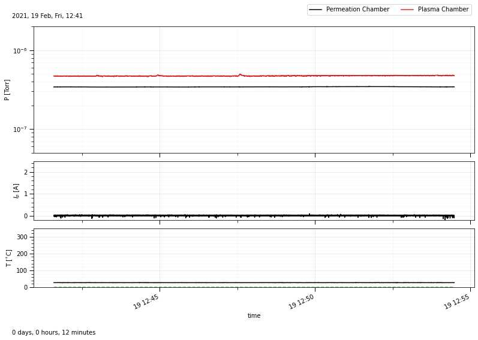

Read Logger Data#
Use Raspi to read ADC and TC datafiles.
from aklab.controlunit import Raspi
raspi = Raspi(bpath='../../../data',timestamp='20210219_124135')
raspi.plot()

Signal conversion#
# 11.46 convert Pfeiffer signal to pressure
self.pu = 10 ** (1.667 * self.adc["P2"] - 11.46)
# convert linear IG signal to pressure
self.pd = self.adc["P1"] * 10 ** self.adc["IGscale"]
# plasma current from hall sensor
def iconv(v):
return 5 / 1 * (v - 2.52)
self.ip = iconv(self.adc["Ip"])
self.t = self.adc["date"]
Data format#
Raspi contains two separate pandas.DataFrame with ADC and TC data.
fmt = {"date": lambda t: t.strftime("%y%m%d %H:%M:%S"),'pd':'{:.1e}','pu':'{:.1e}'}
raspi.df_adc.head().style.format(fmt, precision=1)
| date | ip | pd | pu | time | P1 | P2 | Ip | IGmode | IGscale | QMS_signal | |
|---|---|---|---|---|---|---|---|---|---|---|---|
| 0 | 210219 12:41:35 | -0.4 | 3.4e-07 | 4.7e-07 | 0.2 | 0.3 | 3.1 | 2.4 | 0.0 | -6.0 | 0.0 |
| 1 | 210219 12:41:35 | -0.4 | 3.4e-07 | 4.7e-07 | 0.3 | 0.3 | 3.1 | 2.4 | 0.0 | -6.0 | 0.0 |
| 2 | 210219 12:41:35 | -0.4 | 3.4e-07 | 4.7e-07 | 0.4 | 0.3 | 3.1 | 2.4 | 0.0 | -6.0 | 0.0 |
| 3 | 210219 12:41:35 | -0.4 | 3.4e-07 | 4.7e-07 | 0.5 | 0.3 | 3.1 | 2.4 | 0.0 | -6.0 | 0.0 |
| 4 | 210219 12:41:35 | -0.4 | 3.4e-07 | 4.7e-07 | 0.6 | 0.3 | 3.1 | 2.4 | 0.0 | -6.0 | 0.0 |
raspi.df_tc.head().style.format(fmt,precision=1)
| date | time | T | PresetT | |
|---|---|---|---|---|
| 0 | 210219 12:41:35 | 0.3 | 27.5 | 0.0 |
| 1 | 210219 12:41:35 | 0.5 | 27.5 | 0.0 |
| 2 | 210219 12:41:35 | 0.8 | 27.8 | 0.0 |
| 3 | 210219 12:41:36 | 1.1 | 27.8 | 0.0 |
| 4 | 210219 12:41:36 | 1.3 | 27.8 | 0.0 |